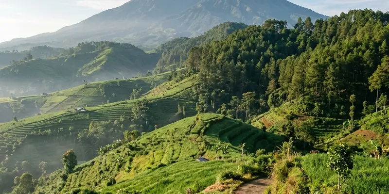

Wahana utama Malang Skyland meliputi sky bridge kaca, skynet bean bag di atas jaring tali, dan aktivitas ATV di jalur khusus kawasan Karangploso.
Ringkasan Inti
- Sky bridge kaca sepanjang sekitar 200 meter menjadi wahana paling ikonik.
- Skynet menawarkan pengalaman duduk di atas bean bag yang diletakkan di jaring tali.
- Aktivitas ATV tersedia sebagai pilihan tambahan bagi pencari sensasi adrenalin.
- Setiap wahana memiliki tingkat kenyamanan berbeda sehingga cocok untuk segmen pengunjung yang beragam.
Apa Saja Wahana Utama di Malang Skyland?
Wahana utama di Malang Skyland adalah sky bridge kaca dan skynet, dua fasilitas yang dirancang untuk menghadirkan pengalaman ketinggian dengan panorama 360 derajat.
Sky bridge merupakan jembatan berlantai kaca sepanjang sekitar 200 meter yang memungkinkan pengunjung berjalan sambil melihat langsung ke bawah, menciptakan sensasi melayang di atas lembah dan perbukitan sekitar. Sementara itu, skynet adalah area duduk berupa bean bag berwarna cerah yang diletakkan di atas jaring tali, memberikan pengalaman bersantai sambil tetap merasakan sensasi ketinggian, namun dengan tingkat intensitas yang lebih ringan dibandingkan sky bridge.
Kombinasi kedua wahana ini menjadikan Malang Skyland relevan untuk berbagai segmen pengunjung, mulai dari yang mencari sensasi ekstrem hingga yang sekadar ingin bersantai sambil menikmati pemandangan.
Bagaimana Pengalaman Mencoba Sky Bridge di Malang Skyland?
Pengalaman mencoba sky bridge di Malang Skyland memberikan sensasi berjalan di atas lantai kaca setinggi puluhan meter dengan pemandangan lembah dan perbukitan di sekitarnya.
Bagi pengunjung yang baru pertama kali mencoba wahana serupa, sensasi melihat langsung ke bawah melalui lantai kaca dapat terasa menegangkan pada beberapa langkah pertama. Namun, struktur jembatan yang dirancang dengan standar keamanan umumnya membuat pengalaman ini tetap dapat dinikmati oleh sebagian besar pengunjung dewasa maupun remaja.
Pengunjung yang memiliki rasa takut ketinggian berlebihan atau kondisi kesehatan tertentu disarankan untuk mempertimbangkan kembali sebelum mencoba wahana ini, dan dapat berkonsultasi dengan petugas di lokasi mengenai kondisi wahana pada hari kunjungan.
Seperti Apa Sensasi Wahana Skynet?
Sensasi wahana skynet adalah duduk santai di atas bean bag yang diletakkan pada jaring tali tinggi, sambil menikmati udara sejuk dan pemandangan pegunungan Malang.
Dibandingkan sky bridge yang menuntut aktivitas berjalan, skynet lebih berorientasi pada aktivitas bersantai dan berfoto. Bean bag berwarna cerah yang digunakan juga menjadi elemen visual yang menarik untuk konten media sosial, sehingga wahana ini populer di kalangan pengunjung muda yang gemar berbagi foto perjalanan.
Meski terkesan santai, pengunjung tetap perlu mengikuti arahan petugas terkait kapasitas maksimum dan cara duduk yang aman di atas jaring tali, mengingat wahana ini tetap berada pada ketinggian tertentu.

Lanskap perbukitan hijau Karangploso menyempurnakan keseruan wahana petualangan dan rekreasi keluarga di Malang Skyland.
Apakah Tersedia Aktivitas Lain Selain Sky Bridge dan Skynet?
Selain sky bridge dan skynet, Malang Skyland menyediakan aktivitas berkendara ATV di jalur khusus yang telah disiapkan untuk pengunjung yang menyukai sensasi berkendara.
Jalur ATV di Malang Skyland dirancang untuk memberikan pengalaman menjelajah kawasan sekitar sambil tetap menikmati pemandangan alam pegunungan Malang. Aktivitas ini menjadi pelengkap bagi pengunjung yang menginginkan variasi selain wahana ketinggian, terutama bagi kelompok remaja atau dewasa muda yang menyukai aktivitas fisik.
Karena aktivitas ATV umumnya dikenakan biaya tambahan di luar tiket masuk dasar, pengunjung disarankan menanyakan langsung ketersediaan dan tarifnya kepada petugas di lokasi.
Wahana Mana yang Paling Cocok untuk Keluarga dengan Anak Kecil?
Wahana yang relatif lebih cocok untuk keluarga dengan anak kecil di Malang Skyland adalah skynet, karena aktivitasnya lebih santai dibandingkan sky bridge maupun ATV.
Meski demikian, orang tua tetap perlu mendampingi anak-anak secara langsung selama berada di area ketinggian, termasuk saat menggunakan skynet, mengingat wahana ini tetap berada pada struktur jaring tali yang tinggi. Untuk wahana sky bridge dan ATV, sebaiknya disesuaikan dengan batas usia dan tinggi badan yang ditetapkan pengelola demi keamanan bersama.
Sebelum mencoba wahana tertentu bersama anak-anak, ada baiknya menanyakan terlebih dahulu kepada petugas mengenai batasan usia dan tinggi badan yang berlaku pada hari kunjungan.
Kesimpulan
Ragam wahana di Malang Skyland, mulai dari sky bridge, skynet, hingga ATV, memberikan pilihan pengalaman yang berbeda sesuai preferensi dan tingkat keberanian pengunjung. Untuk melengkapi persiapan kunjungan, wisatawan dapat menyimak harga tiket dan jam buka Malang Skyland terbaru serta rute menuju Malang Skyland dari Kota Batu.
FAQ Wahana Malang Skyland
Sky bridge di Malang Skyland dirancang dengan struktur lantai kaca yang mengikuti standar keamanan wahana ketinggian, namun pengunjung tetap disarankan mengikuti arahan petugas di lokasi.
Skynet relatif lebih santai dibandingkan sky bridge, namun anak-anak tetap perlu didampingi orang tua karena wahana ini berada pada ketinggian tertentu.
Biaya aktivitas ATV di Malang Skyland umumnya terpisah dari tiket masuk dasar, sehingga pengunjung perlu menanyakan tarifnya secara langsung kepada petugas.